Aula 04
Aula 04
Considerações iniciais
Nesta aula apresentamos os conceitos sobre Algoritmos de Classificação utilizados em Aprendizado de Máquina (Machine Learning). Serão vistos os algoritmos de Naïve Bayes, Árvores de decisão, Aprendizado por regras, aprendizado por instâncias (kNN), aprendizado com máquinas de vetores de suporte (SVM), e Regressão Logística.
Conceitos sobre Machine Learning

Neste exemplo temos os dados dos clientes e sua classificação de risco, o objetivo a partir desta tabela é classificar futuros clientes usando Machine Learning.

- Note que os a coluna dos riscos é uma avaliação feita pelo banco
Objetivo
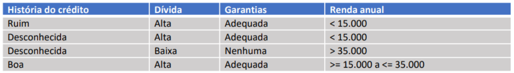
- Treinar um algoritmo de Machine Learning
- Testar cada registro de cliente para que o algoritmo possa fazer a análise e classificar: Risco: Baixo, Moderado ou Alto
Algoritmos Naive Bayes
Naive Bayes é um algoritmo que gera uma tabela de probabilidades a partir de uma técnica de classificação de dados. É usado para o machine learning, mas a técnica é famosa no meio acadêmico da estatística. Seu racional é baseado nos estudos de Thomas Bayes e “naive” significa ingênuo, uma referência a linha de análise do algoritmo para as características da base de dados em questão.
Sua aplicação para classificação e geração de tabela de probabilidades. Vale dizer que sua lógica assume que a presença de uma característica específica não se relaciona com qualquer outro recurso também inserido na base de dados analisada. + Exemplo: construção de uma campanha de marketing focada em um lead ideal que teria que estar alinhado com o preço, diferenciais do produto e canal de aquisição. Assim, todos esses elementos, juntos, têm uma relação direta com a construção da campanha mais eficiente para a conversão, mas, separadamente, também configuram propriedades que contribuem para a probabilidade de encontrar o lead ideal.
Isto permite fazer o aprendizado de máquina que contempla uma análise com diferentes elementos de forma integrada, e também separadamente, trazendo mais insights e informações para o gestor
Treinamento
Aprendizagem: coloca os dados na tabela
- Coloca na tabela a quantidade de ocorrência de cada atributo
- Calcula as porcentagens de intersecção entre as colunas

Análise de risco de um novo cliente
Dados:
| História | Dívida | Garantias | Renda |
|---|---|---|---|
| Boa | Alta | Nenhuma | > 35.000 |
\[ P(\text{Alto}) = \frac{6}{14} \cdot \frac{1}{6} \cdot \frac{4}{6} \cdot \frac{6}{6} \cdot \frac{1}{6} \]
\[ P(\text{Alto}) = 0,0079 \]
\[
P(\text{Alto}) = (0,0079/ 0,0645) *100 = 12,24
\]
\[ P(\text{Moderado}) = \frac{3}{14} \cdot \frac{1}{3} \cdot \frac{1}{3} \cdot \frac{2}{3} \cdot \frac{1}{3} \] \[ P(\text{Moderado}) = 0,0052 \]
\[ P(\text{Moderado}) = (0,0052/ 0,0645)* 100 = 8,06 \]
Atividade prática Naive Bayes
Algoritmo Árvore de decisão
Uma árvore de decisão é um algoritmo de aprendizado de máquina supervisionado que é utilizado para classificação e para regressão.
Possui estrutura de um fluxograma, sendo que a árvore de decisão estabelece nós (decision nodes) que se relacionam entre si por uma hierarquia.
- Existe o nó-raiz (root node), que é o mais importante, e os nós-folha (leaf nodes), que são os resultados finais.
- No contexto de Machine Learning, o raiz é um dos atributos da base de dados e o nó-folha é a classe ou o valor que será gerado como resposta.

Árvore de decisão em Python e R
Python
É possível implementar uma decision tree em apenas quatro linhas em Python.
Uso do módulo DecisionTreeClassifier, (biblioteca Sklearn, com as funções “fit”, “score” para treinar e configurar). Para classificar um novo registro e verificar se o modelo aprendeu utiliza-se o método “predict”.
Usar as funções do matplotlib para plotar um gráfico indicando visualmente como essa decision tree está realizando previsões.
R
No R, também conseguimos com muita facilidade construir um algoritmo de árvore decisória. Utiliza-se bibliotecas distintas como cTree, RPart e Tree. Em pouquíssimas linhas, pode ser cirado o modelo e a visualização de forma intuitiva.
O R também utiliza o método “fit” — ou seja, o raciocínio não é tão diferente do Python
Diagnóstico de doenças
Identificar doenças a partir de informações passadas ao algoritmo como treinamento (classificação)
O Sistema aprende os dados, entende suas relações, realiza os cálculos para entender quais são os nós mais importantes e ajusta as condições.
Para resultados ainda mais interessantes, utilizar random forest
Previsão de Empréstimo
Aplicação de regressão pois necessita de informação numérica como saída.
O Sistema vai entender como a base de dados está organizada de acordo com os atributos e criar um modelo capaz de fazer essa previsão.
Análise de sentimentos
A análise de sentimentos é uma sub categoria do processamento de linguagem natural.
O modelo entende os dados e tenta prever se um texto deve ser categorizado como positivo ou negativo, por exemplo.
Para melhores resultados, a random forest é aplicada também.
Previsão de saída de funcionários
Outro uso muito específico é para o RH saber quando um funcionário está quase saindo da empresa por insatisfação.
Com a análise de dados sobre cada um, o modelo entende a base de dados e consegue realizar uma predição, ou seja, uma classificação.
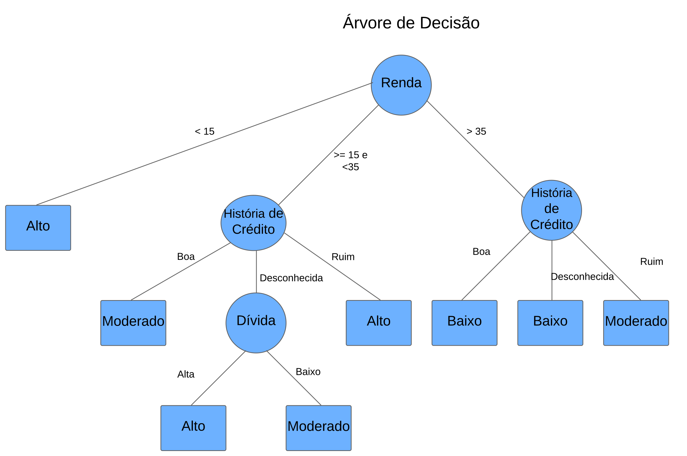
Análise de um novo cliente
| História | Dívida | Garantias | Renda | Risco |
|---|---|---|---|---|
| Boa | Alta | Nenhuma | > 35.000 | Baixo |
| Ruim | Alta | Adequada | < 15.000 | Alto |
Atividade prática Árvore de Decisão
Aprendizagem baseada em Instâncias - kNN
O K Nearest Neighbors (KNN) ou os K vizinhos mais próximos, traduzindo para o português, é um algoritmo de aprendizagem de máquina supervisionado. Embora seja majoritariamente utilizado em problemas de classificação, este algoritmo também pode ser aplicado em problemas de regressão.
A aprendizagem baseada em instâncias provém da não existência de um modelo (regra ou função) construído a partir de uma base de dados de treinamento (até porque o KNN não possui uma etapa de treinamento, propriamente dito).
O que se faz é armazenar todos os dados (instâncias) de treinamento (demandando um alto poder de armazenamento), e a cada nova instância que se deseja classificar, cálculos comparativos são realizados entre esta e os demais dados já existentes. Por esse motivo, o KNN é conhecido como sendo um algoritmo preguiçoso.
O KNN faz a comparação entre instâncias por meio do cálculo da distância entre vetores/dados dispostos no espaço euclidiano. Existem várias métricas para calcular a distância entre pontos no espaço (Euclidiana, Hamming, Manhattan, Minkowski, Chebyshev e outras), aqui vamos analisar o algoritmo utilizando a distância Euclidiana, por ser a mais comumente utilizada.
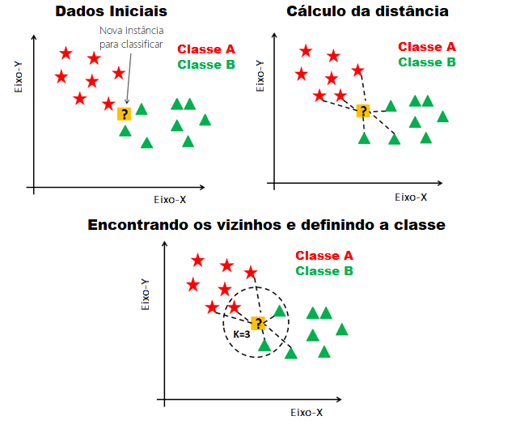
Na imagem estão inicialmente todos os dados dispostos no espaço euclidiano (incluindo o dado que se deseja classificar).
O algoritmo realiza o cálculo da distância euclidiana entre a nova instância e todas as outras instâncias já classificadas (uma a uma), em que a classe é conhecida através dos dados de treinamento.
Com todas as distâncias calculadas, os K elementos mais próximos (com menor distância) são selecionados e suas respectivas classes são analisadas (representado no terceiro gráfico da figura).
Por fim, a classe que obteve maior representatividade através dos K vizinhos mais próximos será usada para definir o rótulo da nova instância. No exemplo da figura, o novo elemento seria classificado como sendo da Classe B.
Quando o KNN é utilizado em problemas de classificação, a predição é feita por meio da classe com maior representatividade (moda). Por outro lado, em problemas de regressão, o resultado da predição é definido como sendo a média dos K valores mais próximos.
A análise matemática do algoritmo é essencialmente concentrada na equação da distância euclidiana:
\[ d(P_i,P_j) = \sum_{m=1}^{n} (P_{im} - P_{jm})^2 \]
Em que n representa o número de variáveis (colunas) que são usadas para caracterizar os dados e m é a variável que é iterada por esses possíveis valores — m=1, 2, …, n. A variável alvo não entra nos equacionamentos.
pim e pjm são, respectivamente, o vetor com as características do dado a ser classificado e o vetor que contém as informações referentes aos dados existentes (dados de treino).
Esse cálculo é realizado x vezes, onde x é a quantidade de instâncias existentes no conjunto de treino.
Temos duas classes: Azul e vermelha e um ponto no meio

Verificar os vizinhos existentes (k) ao ? e classificar conforme a maioria
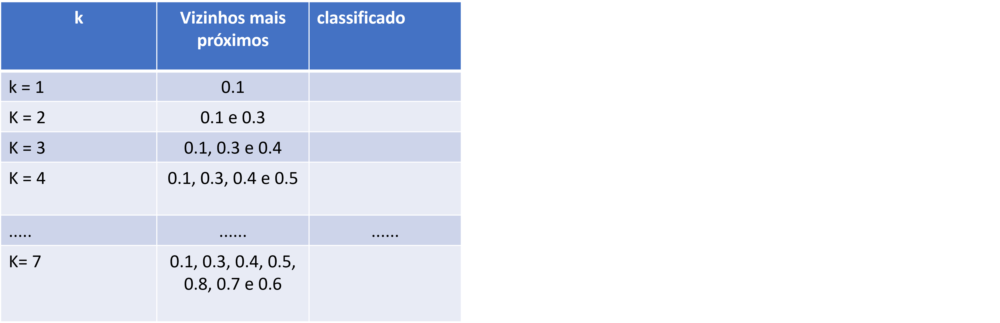
Cálculo da distância Euclidiana
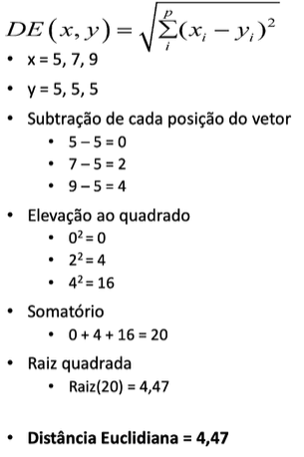
Como exemplo vamos analisar a distância deste registro de um novo cliente com o pontos selecionados (3º e 9º)
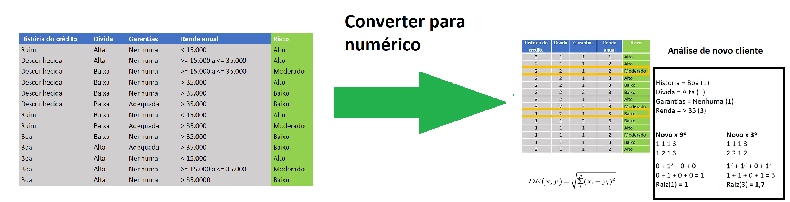
Logo esteve novo cliente por estar mais próximo do 9° terá: RISCO BAIXO
Atividade prática: Algoritmo baseado em Instâncias -kNN
Arquivo: kNN.ows
Aprendizagem com máquinas de Vetores de Suporte - SVM
Máquina de Vetores de Suporte (Support Vectors Machine — SVM, do inglês) é um algoritmo de aprendizagem de máquina utilizado tanto para classificação quanto para regressão.
Essencialmente, o SVM é responsável por encontrar a melhor fronteira de separação entre classes/rótulos possível para um dado conjunto de dados que sejam linearmente separáveis.
Para o SVM, as diversas fronteiras de separação possíveis que são capazes de separar completamente as classes são chamadas de hiperplanos. Dessa forma, o SVM busca encontrar o melhor hiperplano para um dado data set cujas classes são linearmente separáveis.
Objetivo: traçar uma linha que separe as duas classes
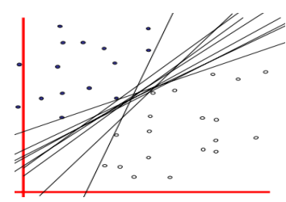
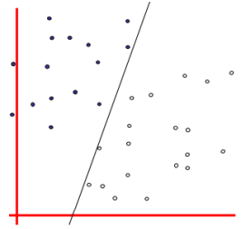
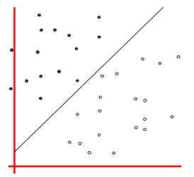
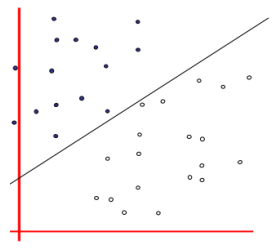
Partindo do conjunto de dados genérico apresentado, temos duas classes distintas e o objetivo então será encontrar o melhor hiperplano capaz de separar as duas classes e que estaria localizado no ponto médio entre elas (maximizando a margem)
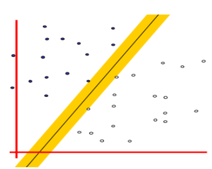
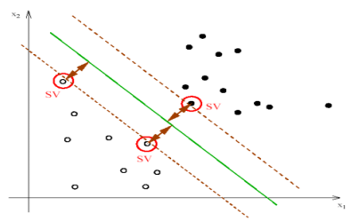